Hur vattnet och djupet ritas. Land är alltid flygfoto. Varje stil laddas ner första gången du väljer den (ca 2 MB) och sparas sedan på telefonen.
Kartans färg
Dämpa kartans färger (satellitbild och djupfärger) så att markeringarna syns tydligare. 0 % = gråskala, 100 % = fulla färger.
80 %
Kompassen
Kilen som visar vart telefonen pekar (slås på under Filter → Kompass).
Längd500 m
Vinkel40°
Platsnamn på kartan
Hur namnen från OpenStreetMap ser ut (slås på under Filter → Namn).
Storlek12 px
Synlighet50 %
Prick1,75 px
Andras fiskeplatser
Hur tydligt gruppens platser syns på kartan.
Båten
Spår
Din rutt sparas för varje sjö och finns kvar. Hur det ser ut, hur långt tillbaka du ser, stopp som ringar och en annan persons spår väljer du i spårmenyn (du kommer dit även genom att trycka på Spår-ikonen i Filter). Spår sparas inte i Demo Mode.
Fart för mätverktyget
Restiden räknas med din snittfart när den finns, annars med marschfarten. Snittfarten är snittet av de senaste 2 minuterna du faktiskt kört (över 0,8 kn) och används så fort du kört i 2 minuter. Stannar du behålls farten från senaste körningen.
kn
Din snittfart–Inte kört än
Varningar
Åskvarning
Larm när en blixt slår ner närmare än så här – även när Blixtar är av i Filter. Vibration fungerar inte på iPhone.
Kartanalys
Kartanalys: tona ner resten av kartan
Hur mörk och grå kartan blir utanför det Kartanalys hittar.
Fångstdata
Fångsterna från Fiskfiskarnas tävlingar (heatmapen och Kartanalys) – vad den här telefonen har hämtat. Historiken hämtas när den kan ha ändrats, live bara när en tävling pågår här.
Offline
Ladda ner sjön för offline
Alla zoomnivåer för de fyra kartlägena i knappen (Djupfärger, Förenklad, Bottenhårdhet, Vegetation), så att kartan fungerar utan täckning. Helst på wifi.
Avancerat
Admin
Statistik, användare, städning och export för hela appen.
Demo-position
Startfilmen
Visas när du valt ditt namn.
Admin
Översikt över hela appen
Testläge
För alla i Demo Mode. Egen testdatabas – inget här hamnar i den riktiga.
Tävling
Testbåtar
Fångst
Automatiska fångster
Tom cm = slumpad längd. Automatiska fångster tas helst av testbåtarna, som då skickar "Senaste fisk". Testbåtar och automatiska fångster körs från din telefon medan appen är öppen.
Åska
Avstånd från din båt. I Demo Mode visas bara testblixtar – riktig åskvarning är avstängd.
Översikt
Räknas från data appen redan har hämtat, så det kostar inga extra reads.
Användare
Firebase-användning idag
Alla användare (uppskattning)
Den här enheten
Räknas sedan kvoten nollställdes kl 09:00. Gratiskvot per dygn: 50 000 reads, 20 000 writes, 20 000 deletes. Varje telefon rapporterar sina siffror högst var 5:e minut medan appen är öppen, så totalen kan ligga några minuter efter. Exakta siffror finns i Firebase-konsolen (fliken Usage).
Fiskeplatser
Som admin kan du ändra och ta bort allas fiskeplatser – tryck på platsen på kartan eller i Loggen.
GPX går att läsa in i sjökortsplottrar (Garmin, Lowrance m.fl.), CSV öppnas i Excel. Bra som backup.
Säkerhetskopia
Hela databasen i en fil: fiskeplatserna på alla sjöar, spåren och inställningarna (inte båtarna). Spara filen i Filer eller maila den till dig själv. Återställ lägger tillbaka allt som finns i filen – även platser som tagits bort sedan dess. Det som tillkommit efter kopian rörs inte.
Båtar på kartan
Tar bort båtar från kartan för alla, t.ex. spökbåtar eller efter en tävlingsdag. Den som har appen öppen dyker upp igen inom en minut.
Dela position var
Hur ofta en båt som rör sig skickar sin position. Gäller alla telefoner. Kortare tid = båtarna rör sig jämnare på kartan men kostar fler reads. Står man still skickas den en gång i minuten oavsett.
Tävlingslåset
På: platser kan bara läggas, ändras och tas bort från en vecka före till en vecka efter en tävling. Av för alla: kartan är öppen för alla tills du slår på låset igen – t.ex. om Fiskfiskarnas sida strular. Gäller den här sjön. Du själv kan alltid ändra.
Admin
Ange admin-koden.
Fel kod, försök igen.
Regnaren
Väder vid Regnaren
Tryck på kartan
0 m5 m10 m+
100 m
0,0kn–m
0/15
Visa
Hur långt tillbaka
Linje
Färg
Synlighet 60 %
Minsta tid för ett stopp 5 min
Största fisk
Senaste tävlingar
☀ Håll skärmen tänd är avstängdDen håller telefonen vaken medan appen är öppen (drar mer batteri). Du kan slå på den igen i Inställningar → Båten.
Markeringar
Lager
DEMO · TESTLÄGE
Använd ej på vattnet!
Riktig tävling pågår – du syns inte för de andra
30 km runt · FMI
Hjälp
Så använder du FF Map
👋 Välkommen!
Djupkarta, GPS och gruppens fiskeplatser, båtar och tävlingsfångster – i realtid. Börja gärna med att lägga till appen på hemskärmen ↓
🧪 Demo Mode – prova utan att förstöra något
Slå på Demo Mode när du vill testa appen, t.ex. hemma i soffan – eller när kartan är låst mellan tävlingarna. Du får en låtsasposition vid sjön och ser bara andra som också har Demo Mode på. Inget sparas i den riktiga databasen, så fiskeplatser, båtar och meddelanden du provar med syns aldrig för de andra. Slå på och av när du vill; den stängs av själv efter 15 minuter.
✨Nytt i appen
📲Installera appen
På hemskärmen öppnas kartan i helskärm, utan adressfält, och startar snabbare.
✓ Du använder redan hemskärmsappen – allt klart!
1Tryck på Dela i Safari (längst ner, eller vid adressfältet).
2Välj Lägg till på hemskärmen (scrolla ner i listan om den inte syns).
3Tryck Lägg till – öppna sedan FF Map från hemskärmen.
1Tryck på Dela uppe vid adressfältet i Chrome.
2Välj Lägg till på hemskärmen.
3Tryck Lägg till – öppna sedan FF Map från hemskärmen.
1Tryck på menyn ⋮ uppe till höger i Chrome.
2Välj Installera app (eller Lägg till på startskärmen).
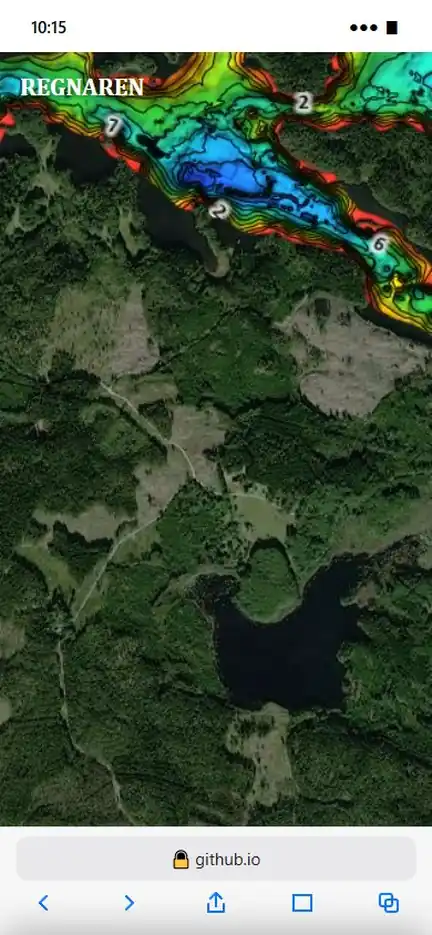
Din position delas med gruppen bara medan appen är öppen.
Telefonen sparar appens ikon när den läggs på hemskärmen. Har ikonen bytts (som 6 oktober) syns den nya först när du tar bort appen från hemskärmen och lägger till den igen – namn, inställningar och nedladdade kartor finns kvar.
👋Kom igång
Vem är du? – tryck på dig själv bland bilderna och sedan på Fortsätt som … – finns du inte med: Annat namn och skriv ditt namn. Namnet är kopplat till dina fiskeplatser – väljer du samma namn på en ny telefon är de dina där också.
Sedan snurrar loggan in (startfilmen) – tryck för att hoppa över. Du kan se den igen i Inställningar → Avancerat → Startfilmen.
Efteråt kommer en ruta med vägen hit till Hjälp, och telefonen frågar om platsen – tillåt den, annars vet appen inte var du är.
Din bild sitter på menyknappen uppe till vänster. I menyn: sjöarna, Logg, Profil (din egen), Inställningar, Hjälp och Logga ut. Byt namn i Inställningar → Byt namn.
En orange prick på menyknappen och vid Hjälp betyder att det finns nytt i appen.
🗺️Kartan
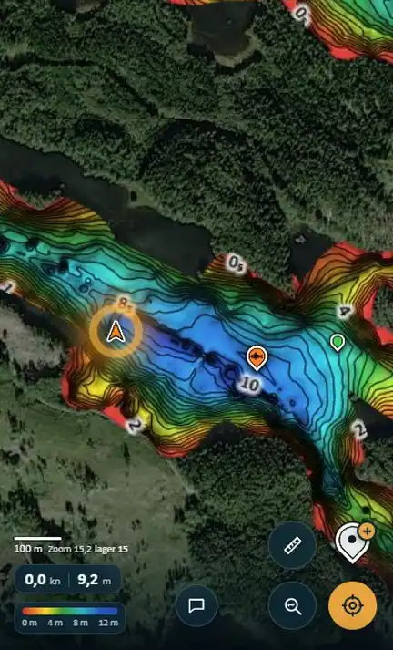
Dra för att flytta, nyp eller dubbeltryck för att zooma.
Det går att dra kartan även om fingret börjar på en plats, båt eller pratbubbla – bara ett tryck (utan att dra) öppnar den.
Ju närmare du zoomar, desto fler djupkurvor och djupsiffror (från C-MAP Genesis) – i alla kartlägen, ända till zoom 18. Nere till vänster: skalan och t.ex. "15,3 × L 15" (zoom och kartlager).
Färgskalan nere till vänster går från 0 m till sjöns maxdjup. Samma färg = samma djup i alla sjöar.
Sjöns kant syns som en tunn vit linje (Inställningar → Kartan → Strandlinje). Namn på öar, uddar och vikar: Namn i Filter.
Byt sjö i menyn (din bild uppe till vänster): Regnaren, Mälaren, Sibbofjärden, Sjösjön, Vågsfjärden och Östra Vitten.
🎨Kartlägen
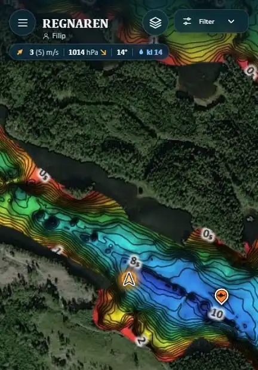
Tryck på kartlägesknappen uppe till höger: Djupfärger → Förenklad → Bottenhårdhet → Vegetation.
Håll inne knappen för alla kartlägen – sist i listan finns Heatmap (tävlingarnas fångster, se nedan), som också har en egen knapp till vänster om kartlägesknappen.
Djupfärger med skuggad botten · Förenklad utan skuggor · Sjökort blå band · Blå relief · C-MAP original med djupsiffror · Vegetation (grönt = växtlighet) · Bottenhårdhet (ljust mjukt → rött hårt).
Ett kartläge laddas ner första gången du väljer det och sparas sedan i telefonen. För en tur utan täckning: Inställningar → Offline.
📍Din position
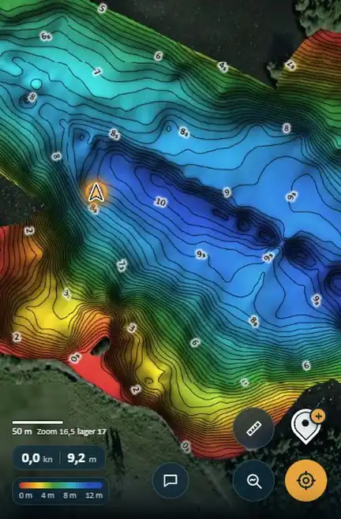
Pilen är du – den pekar åt det håll du åker, med en orange ring som pulserar (kan stängas av i Inställningar → Båten).
Sikteknappen nere till höger centrerar kartan på dig.
Nere till vänster: farten i knop och djupet under båten.
Kompass (Filter): en kil från dig mot dit telefonen pekar och en rund visare (N Ö S V) nere till höger. iPhone frågar om lov första gången. Färg, längd och vinkel i Inställningar → Kartan.
Är du inte vid sjön står det hur långt bort du är – GPS:en startar när du kommer dit.
⚓Lodet – djup, sträcka och restid
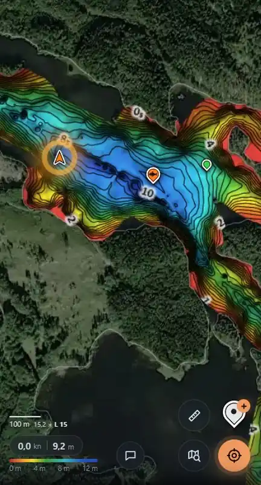
Tryck på kartan – lodet visar djupet där.
Sträckan dit sjövägen (rutten ritas runt uddar och öar) och restiden – med din fart, eller marschfarten när du står still (Inställningar → Båten).
Hittas ingen väg sjövägen visas en prickad linje rakt dit och sträckan "fågelvägen".
Tryck på lodets ruta för att sätta en markering just där.
Tryck på lodet igen för att ta bort det.
🐟Fiskeplatser och markeringar
Lägg till
Håll fingret på kartan där platsen ska vara.
Eller tryck ＋ (nere till höger) – platsen hamnar där du är.
Välj typ: Markering (neutral prick), Abborre (orange), Gädda (grön), Gös (blå) eller Hem (brunt hus – hemmet eller bryggan) – eller Fara/Träffpunkt (se nedan). Skriv ett namn – tangentbordets blå Klar stänger tangentbordet – och tryck Spara. Nålen landar på kartan.
Mellan tävlingarna är kartan låst – se Tävlingarna. I Demo Mode går det alltid.
Ändra och ta bort
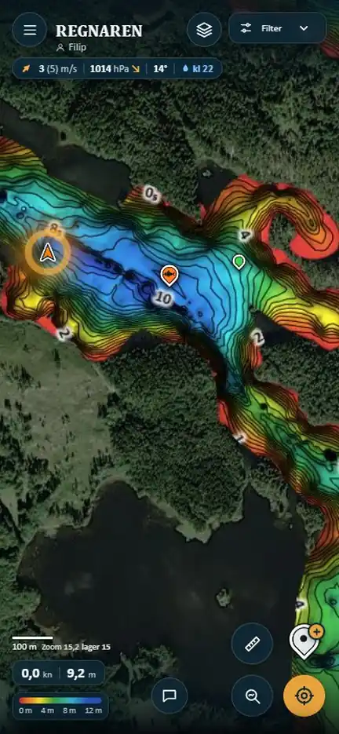
Tryck på en av dina platser – rutan öppnas utan tangentbord. Tryck på namnet för att ändra det, byt typ och tryck Spara.
Ta bort = papperskorgen längst till vänster. Platsen försvinner, men i 6 sekunder kan du trycka Ångra – först sedan tas den bort för alla.
Rutan visar vem som sparat platsen, när och hur långt bort, och vad som finns under den: djup, lutning, botten (hårdhet) och växter.
Knapparna längst ner: papperskorgen, ➤ Åk hit, 🔎 Liknande (liknande ställen i Kartanalys) och Spara.
Rutorna nertill: dra i strecket överst för att göra dem större eller mindre, snärta ner eller tryck ✕ för att stänga.
Andras platser är mindre och bara färgade (hur tydligt de syns: Inställningar → Kartan). Trycker du på dem ser du vem, typen, när och hur långt bort.
⛔Fara & Träffpunkt
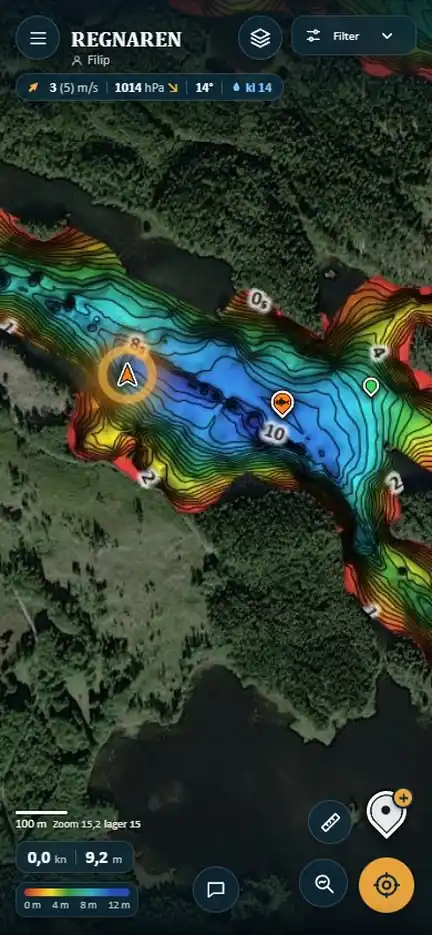
Fara – röd stoppskylt för grund, stenar och annat att se upp för. Syns alltid för alla, döljs aldrig av filter.
Träffpunkt – en fyr med ringar som alla ser (lunch på en ö …). Försvinner efter 1 timme, en per person.
Välj typen när du sparar en plats.
🚤Båtarna och profilerna
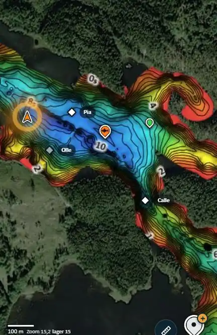
Allas båtar syns med namn och rör sig på kartan. Är ni flera i samma båt blir det en båt med allas namn.
En båt blir grå när dess position är gammal, och försvinner efter ett tag.
Tryck på en båt: när den senast syntes, hur långt bort den är, personens fångster i tävlingen som pågår och ➤ Åk hit. Tryck på namnet (›) för profilen.
Profilen (från Fiskfiskarna): rank och ELO, segrar, tävlingar, största fisken av varje art, de senaste tävlingarna och fångsterna – med Visa på kartan, Fångster (heatmapen med bara personens fångster) och ➤ Åk hit.
Profilen öppnas också från Profil i menyn (din egen), namnet i ett snabbmeddelande och namnet i en fångst. Är profilerna inte inladdade på telefonen: Ladda in data.
🏆Tävlingarna
Kartan är låst mellan tävlingarna: platser (även Fara och Träffpunkt) kan bara läggas till, ändras och tas bort från en vecka före till en vecka efter en tävling på sjön – så hålls gruppens karta ren. Annars kommer en ruta som säger när det öppnar, med Öppna Demo Mode om du vill prova.
Under en tävling kommer fångsterna live från Fiskfiskarna: i Heatmap (märkt Live), i Kartanalys → Fångster, i båtrutan och i profilerna.
Ledare (Filter → Lager, av från start): ställningen under vädret – de fem bästa och du – och en 👑 efter ledarens namn på kartan. Poäng = de 5 längsta av varje art ihop (godkända fiskar, minst abborre 25, gädda 50 och gös 35 cm), i hela tävlingen även om den fiskas i flera sjöar. Tryck på ett namn så visar kartan personen.
Din senaste fisk ligger först bland snabbmeddelandena – skicka den med ett tryck (se Snabbmeddelanden).
Demo Mode (överst i Hjälp): prova allt tillsammans utan att något sparas på riktigt.
📏Mätverktyget
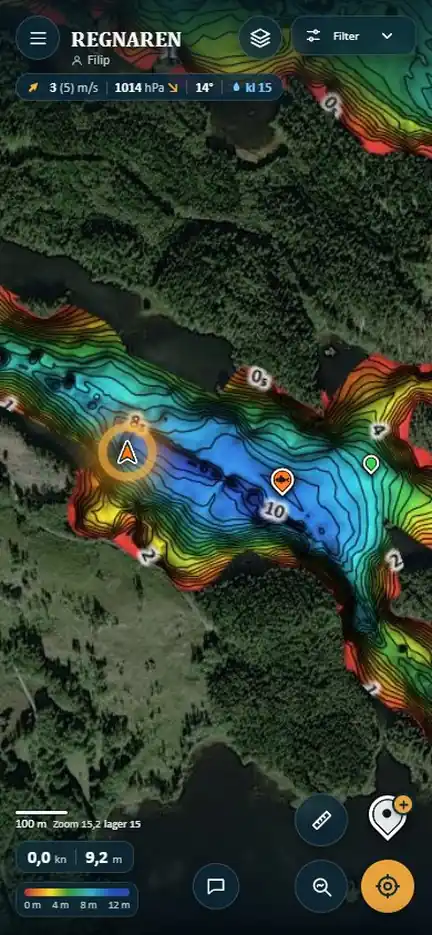
Tryck på linjalen, sedan på kartan för varje punkt – sträcka och tid visas.
Ångra senaste punkten eller rensa. Tryck på linjalen igen för att sluta.
🌬️Väder, vind & lä
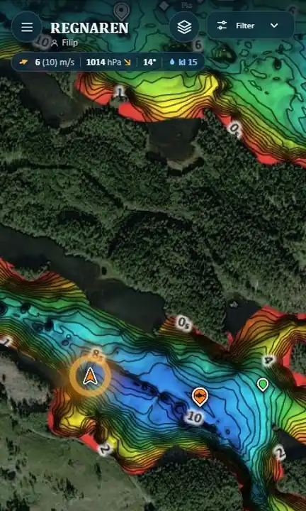
Vädret överst: vind (byar) och riktning, lufttryck med trend, temperatur, regn snart. Tryck för timprognos och sol – tryck på kartan (eller ✕) för att stänga.
Sista 45 minuterna före solnedgången visar vädret en orange sol och minuterna kvar – tänk på vägen hem.
Vind och lä (Filter): "kometerna" visar vinden över öppet vatten, den blå ytan är lä – starkast närmast land. Svag vind = stort lä.
⚡Blixtar
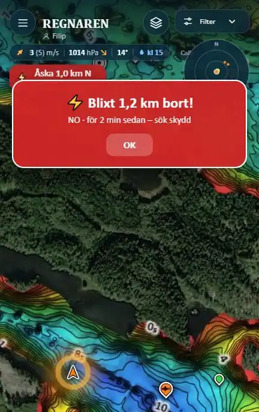
Blixtnedslag i realtid inom 30 km: varning med avstånd och riktning – röd under 10 km, orange inom 30 km.
Radar uppe till höger, ⚡ på kartan (gul = nyss, bleknar på 30 min), pil vid kanten mot närmaste.
Åskvarning: ett stort rött larm med ljud (och vibration på Android) när en blixt slår ner närmare än 10 km – tryck OK, jag har sett. Ändra avståndet i Inställningar → Varningar.
Varningen gäller alltid, även om Blixtar är av i Filter (det döljer bara nedslagen på kartan). Stänger du av varningen syns en röd skylt ⚡✕ Åskvarning av under vädret.
Har ingen blixt slagit ner inom avståndet på 30 minuter efter en varning kommer en grön ruta: ✓ Åskan har dragit förbi.
Data från FMI, några minuters fördröjning. I Demo Mode är den riktiga åskvarningen avstängd.
Ersätter inte sunt förnuft – åk in vid åska.
🔎Kartanalys – hitta ställen
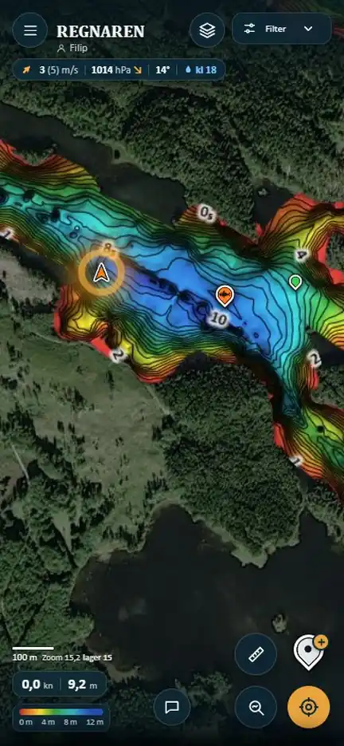
Tryck på kartan med luppen nere till höger. Välj en flik överst – Kartdata, Tumregler, Fångster eller Liknande – och sedan vad du vill hitta. Det som stämmer lyser, resten av kartan tonas ner och blir grå.
Byter du flik släcks det som var på och den nya fliken tar över. Varje flik minns sitt val – går du tillbaka kommer det igen.
Kartdata – den vanliga kartan syns där det stämmer. Tryck på en eller flera; flera = där alla stämmer (de får ett "+"). Djup – ett djupintervall: dra i cirklarna, djupen står under dem och stapeln är mörkare utanför. Branta kanter – där botten sluttar mer än reglaget Lutning över. Grynnor & hålor – grynnor mitt i sjön och gropar: hur mycket en grynna reser sig över den lägsta "sadeln" runt den (grunda hyllor längs land räknas inte); reglagen ställer hur många meter. För en håla markeras bara själva gropen. Etiketten visar djupet – tryck på den för lodet.
Växter – där ekolodet sett växtlighet. Hård botten – välj hur hård. Vindkant – stränder vinden blåser mot just nu. Ihop med andra räknas de inom … m (eget reglage). Bara Djup har ett djupreglage – lägg till Djup för att begränsa de andra. Blir inget kvar säger raden vilken del som tog bort det sista.
Tumregler:Abborre, Gädda, Gös – förinställda kombinationer. De bygger på vanliga fiskeråd, inte på fångster – se dem som tips.
Fångster: välj art (antalet står på knappen) – det som liknar platserna där arten togs i gruppens tävlingar lyser (djup, lutning, botten, växter, avstånd från land, grynna/håla). Storlek = bara fiskar mellan två längder. Likhet (Mest likt – Mindre likt) ställer hur mycket som tänds; raden säger t.ex. "Fiska i det tända: 70 % av gäddorna på 15 % av sjön". Tänt eller Skala (hela sjön, starkast där det är mest likt). Stäng av värden du inte vill jämföra – prickarna ●●● visar hur mycket varje värde betyder. Visar var man fått fisk – inte var all fisk finns.
Liknande – välj en fiskeplats (eller 🔎 Liknande i platsens ruta eller i en fångst) och vad som jämförs: djup, lutning, botten, växter, grynna/håla. Bara platsen = det som finns under pinnen; 25–100 m = snittet inom den radien (liknande omgivningar). Platsen själv får en rosa ring (Gå till visar den), listan visar de mest lika områdena, bäst först – med Åk hit.
Översta raden: resultatet, ⓘ (förklaringen), 💡 (lyser upp det tända – dubbelt så ljust), ↺ Återställ (allt som från början: alla flikars val, reglagen och lampan) och ⏻ Stäng av kartanalys.
När något är på syns skylten Kartanalys under vädret – tryck på den för att öppna rutan. Kartanalys och Heatmap är aldrig på samtidigt.
Hur mycket resten av kartan tonas ner ställer du i Inställningar → Kartanalys. Dra i strecket överst för att göra panelen mindre (inne i den skrollar du), snärta ner eller tryck ✕ för att stänga.
Kartanalys i Filter visar/döljer det du valt (valet finns kvar). Kartanalys är avstängd när appen startas.
🔥Heatmap – var fisken tagits
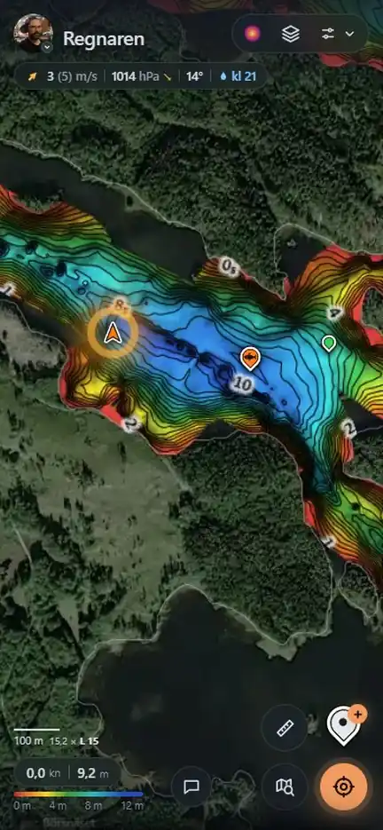
Tryck på heatmapknappen uppe till höger (den färgade kartan till vänster om kartlägesknappen) – eller håll inne kartlägesknappen och välj Heatmap sist i listan. Gruppens tävlingsfångster i sjön du är i, från Fiskfiskarna – under en tävling live.
Fyra stilar: Värme (glöd – mörklila för få, varmvitt för många), Per art (artens färg), Rutor (antal per ruta) och Prickar (en per fångst, större fisk = större prick).
Välj art, tävling och storlek (dra i cirklarna – från minsta till största fisken). Radie och styrka ställer hur utsmetat det blir.
När: en stapel per timme på dygnet och "Bäst kl …". Tryck på en timme eller dra över flera – då visas bara fångsterna från de timmarna (samma timme igen eller ↺ = alla).
Tryck där det är färg: vem, när, djupet, placering i tävlingen och foto om det finns – bläddra med ‹ › om flera fångster ligger där, ➤ Åk hit eller 🔎 Liknande. Namnet öppnar profilen.
Översta raden: resultatet, ⓘ, ↺ Återställ och ⏻ Stäng av heatmap. När den är på syns skylten Heatmap under vädret – tryck för rutan. Heatmap i Filter visar/döljer den.
Fångsterna sparas i telefonen och fungerar utan nät – vad som hämtats står i Inställningar → Fångstdata (Hämta nu).
Aldrig samtidigt som Kartanalys. Visar var man fått fisk – inte var all fisk finns.
➤Åk hit
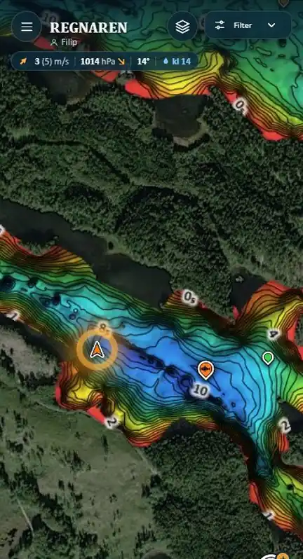
Tryck på en fiskeplats och välj ➤ Åk hit – det finns också i båtrutan, profilen, en fångst i Heatmap, ett snabbmeddelande och Liknande-listan.
Lodet släpps på platsen: djupet, sträckan sjövägen och restiden – rutten ritas runt uddar och öar och följer med när du åker.
Kartan zoomar så att du ser hela vägen: båten, rutten och målet.
Tryck på lodet för att ta bort det.
💬Snabbmeddelanden
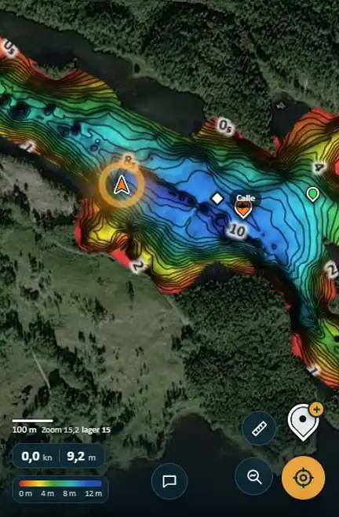
Tryck på pratbubblan längst ner och välj: Fisk!!!, Kommer, Åker in, Mat?, Bajs – eller Egen text (högst 15 tecken, tangentbordets Skicka skickar).
Under en tävling ligger din senaste fisk först ("Gädda 78 cm · 14:32") – ett tryck skickar den, med fotot om det finns.
Meddelandet syns vid din båt för alla i 7 minuter – de första 3 minuterna i färg (fisken i artens färg, egen text i regnbågens), sedan tonas det ner. En notis säger hur länge det syns, och kartan visar dig.
Skriver flera i samma båt samlas det i en bubbla – en rad per person, nyast överst.
Tryck på ett meddelande (eller en rad): när det skrevs och när det försvinner, fotot, ➤ Åk hit (lodet på båten) och Dölj för mig – eller Ta bort om det är ditt. Namnet öppnar profilen.
Fungerar när du är vid sjön.
🎚️Filter
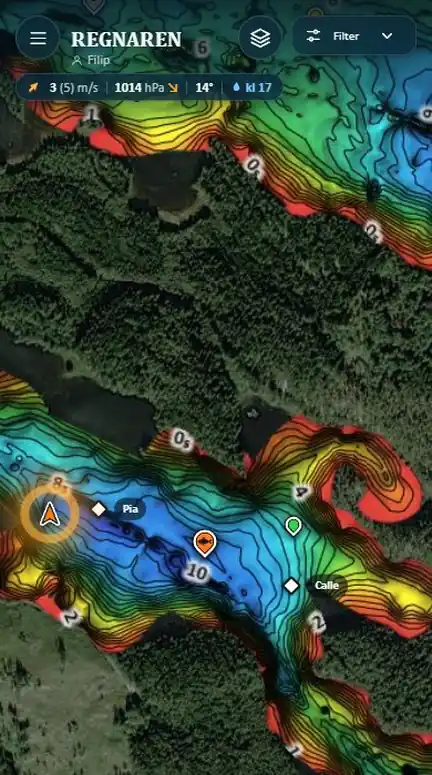
Tryck på Filter uppe till höger. Två grupper: Markeringar (vad som syns av platser och båtar) och Lager (det som ritas på kartan).
Mina – dina fiskeplatser på kartan.
Andras – gruppens fiskeplatser (mindre, bara färgade).
Båtar – de andras båtar med namn.
Typerna – raden med färgade prickar: tryck på en för att dölja eller visa Markering, Abborre, Gädda, Gös, Träffpunkt eller Hem. Ifylld = visas, grå ring = dold. Fara syns alltid.
Spår – linjen efter din båt. Tryck på Spår-ikonen för spårmenyn (se Spår & loggen).
Väder – vädret överst.
Vind och lä – vindens "kometer" och var det är lä.
Blixtar – blixtnedslagen och radarn på kartan (åskvarningen gäller ändå).
Kartanalys och Heatmap – visar/döljer det du valt (valet finns kvar; på/av sker i deras egna rutor).
Fog of war – mörkt överallt utom där du har varit (50 m runt dina spår på sjön).
Ledare – ställningen under en tävling, med 👑 på kartan (se Tävlingarna).
Namn – namn på öar, uddar, vikar och gårdar från OpenStreetMap (utseendet i Inställningar → Kartan).
Kompass – kilen mot dit telefonen pekar och visaren nere till höger (se Din position).
Djup under båten, Andras 50 % / 100 %, Strandlinje och Håll skärmen tänd finns i Inställningar.
En orange prick på Filter betyder att några platser, typer eller båtar är dolda.
📖Spåren och loggen
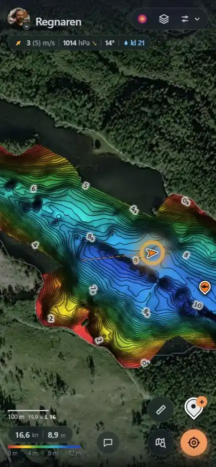
Logg i menyn: alla fiskeplatser, nyast först. Tryck för att hoppa dit på kartan.
Spåret – linjen efter din båt – sparas för varje sjö och finns kvar. Bara det du kör på sjön sparas (inte promenader eller bilresor nära sjön), och det går inte att sudda.
Spårmenyn (tryck på Spår-ikonen i Filter, eller Inställningar → Båten → Spår): dina spår och en annan persons (rullgardinen), hur långt tillbaka (I dag, 7 dagar, 30 dagar, Allt), streckad eller hel linje, färg, synlighet och Stopp som ringar – en ring där du legat still, med tiden (välj minsta tid).
Fog of war (Filter) gör kartan mörk utom där du har varit. I Demo Mode är spåret tillfälligt och sparas inte.
⚙️Inställningar
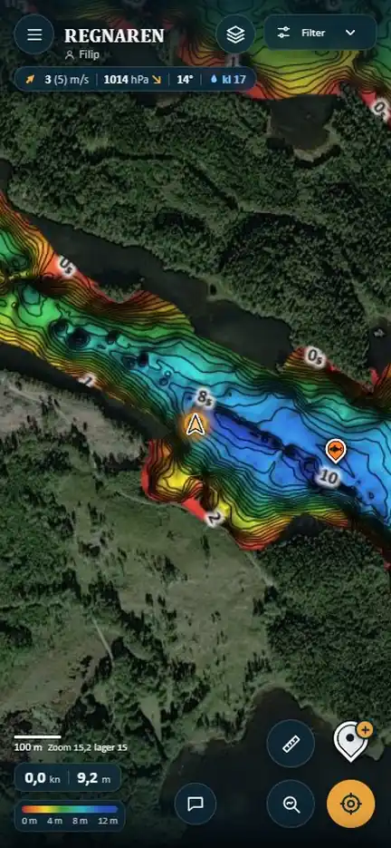
Överst ditt kort: bild, namn och Byt namn. Sedan avsnitt som du trycker på för att öppna – stängda visar de en rad med vad som är valt:
Kartan – storlek på fiskeplatser, kartstil, kartans färg, kompassen (kil, cirkel, längd, vinkel, färg), platsnamnen (storlek, synlighet, prick, alla namn eller bara vatten), hur tydligt andras platser syns (50/100 %) och strandlinjen.
Båten – djupet under båten, pulserande ring, Håll skärmen tänd (telefonen somnar inte medan appen är öppen; en gul sol under vädret – tryck på den för att stänga av; iPhone från iOS 18.4), Spår (öppnar spårmenyn) och marschfarten för restiden.
Kartanalys – hur mörk resten av kartan blir. Fångstdata – vilka tävlingsfångster telefonen har hämtat, Hämta nu. Offline – ladda ner sjön, gör det hemma innan en tur med dålig täckning.
Avancerat – Demo Mode (prova utan att något sparas, se överst i Hjälp) och Startfilmen (spela den igen).
🛟Tips & felsökning
Ingen GPS? Tillåt plats för Safari/Chrome/appen i telefonens inställningar.
Ser något gammalt ut? Stäng appen helt och öppna igen.
Utan nät fungerar kartan om sjön är nedladdad (Inställningar → Offline). En röd skylt under vädret säger Offline; platser du sparar skickas när nätet är tillbaka – då blir skylten grön en stund: Täckning igen.
Går det inte att lägga till en plats? Kartan är låst mellan tävlingarna – rutan säger när den öppnar. Prova i Demo Mode.
Gammal ikon på hemskärmen? Ta bort appen från hemskärmen och lägg till den igen.
Appen måste vara öppen för att din båt ska synas för de andra.
ℹ️Om appen
Djup och kurvor: C-MAP Genesis Social Map. Stränder och namn: OpenStreetMap. Flygfoto: Bing. Väder: Open-Meteo. Blixtar: FMI (CC BY 4.0). Tävlingarnas fångster och profiler: Fiskfiskarna.
Vem är du?
Tryck på dig själv
Välj ditt namn i listan för att fortsätta.
—
—
Kartan är låst just nu
Platser kan bara läggas till, ändras och tas bort från en vecka före till en vecka efter en tävling – så hålls gruppens karta ren mellan tävlingarna.
Vill du prova? Slå på Demo Mode: du får en låtsasposition vid sjön och en egen testdatabas, ser bara andra i Demo Mode och inget sparas på den riktiga kartan. Stängs av efter 15 min.